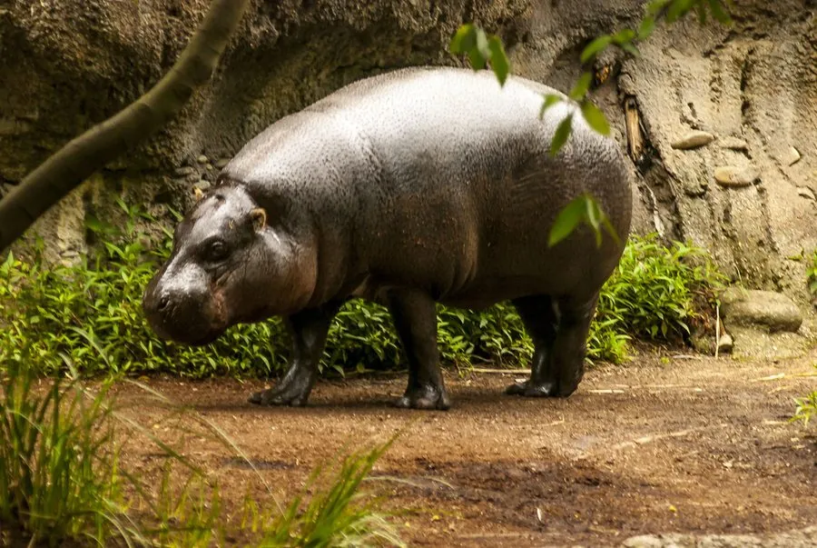

哺乳动物 · 动物界
侏儒河马 Choeropsis liberiensis

生活在西非雨林中的小型河马，体型只有普通河马的一成左右，独居且隐蔽，比河马更依赖陆地森林。
- 分类
- 门脊索动物门纲哺乳纲目偶蹄目科河马科属倭河马属
- 栖息环境
- 西非热带雨林中的河流、沼泽与溪流边，偏好浓密植被
- 地理分布
- 西非的利比里亚、科特迪瓦、几内亚和塞拉利昂
- 保护级别
- IUCN 濒危（EN）
物种志
侏儒河马体长 1.5–1.8 米，肩高 0.75–1.0 米，体重 180–275 kg，体型只有普通河马的一成左右。它的身体较圆，皮肤为深褐至近黑色，腹部偏黄；头部小而圆，眼睛位于头侧，耳朵小，四肢较长，适合在林下行走。
侏儒河马分布于西非的利比里亚、科特迪瓦、几内亚和塞拉利昂，栖息于热带雨林中的河流、沼泽和溪流边。与普通河马不同，它多在夜间单独上岸活动，白天隐伏在河岸洞穴和浓密植被中，食物以树叶、嫩枝、根茎和落果为主。它性情隐蔽，通常独自或成对活动，领地以粪便标记；雌兽妊娠期约 190–210 天，每胎 1 仔。由于雨林砍伐、矿业开发和狩猎，侏儒河马被列为濒危，全球野生数量估计仅约 2000–2500 头。
形态与习性
- 食性树叶、嫩枝、根茎与落果
- 体长1.5–1.8 m，肩高 0.75–1.0 m
- 体重180–275 kg
- 寿命野外约 30–35 年
- 繁殖妊娠期约 190–210 天，每胎 1 仔
- 社会结构多单独或成对活动
- 习性夜行，白天隐伏在河岸洞穴和密林中
趣味知识
- 侏儒河马体型只有普通河马的一成左右，体重不到 300 kg。
- 它比普通河马更依赖陆地，常在雨林里单独活动。
- 侏儒河马白天藏在河岸洞穴中，夜间才出来觅食。
- 全球野生侏儒河马估计仅剩约 2000–2500 头。